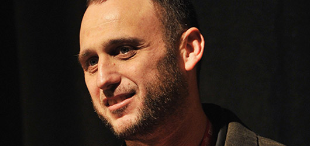

Day Five: Shane Carruth's Inscrutable Upstream Color, Narco Cultura Probes Mexican Drug Cartels
Sundance.org is dispatching its writers to daily screenings and events to capture the 10 days of festivities during the Sundance Film Festival in Park City, Utah. Check back each morning for round-ups from the previous day's events.
Upstream Color
By Eric Hynes
“Wow.” That was how director Shane Carruth greeted each question from the audience after the world premiere of Upstream Color, and judging from the tenor of those questions, the feeling was mutual. Carruth’s sophomore effort after his time travel puzzle Primer won a Grand Jury Prize at the 2004 Festival, Upstream Color is almost impossible to summarize but equally impossible to ignore. A woman (Amy Seimetz) and a man (Carruth) have each been infected by a strange parasite, something that mysteriously connects them to pigs in a faraway pen, and apparently yields a byproduct that sets off a cycle of further infections. Together they struggle to make sense of what’s happened to them, who they are, and how to regain control over their lives.
“I wanted to do an exploration of how people build their own narratives, based on the circumstances around them,” Carruth explained. “Once your identities are formed, sometimes actions or what you observe are connected to these things that are cemented. I wanted to break some people apart and have them have to build up their own identities and narratives based on what they found around them. Where they had some moment where they wake up and see that they’ve done something that they can’t quite atone for. I like the concept of not really knowing how much of your experience is due to your own objectivity.”
Carruth, whose on stage demeanor felt of a piece with his film—assertive but reticent, overflowing with thoughts and ideas—said that he wanted the story framework to function almost as a fable or myth, so that that the execution of the story—what happens from moment to moment—is somewhat secondary to the film’s themes. “Then the narrative can swing around to something emotional,” he said. That notion culminates in the last third of the movie, where no dialogue is spoken and the film becomes a deeply textured progression of images as mysterious as they are unforgettable—simultaneously obscure and intimately knowable. “It’s been set up enough that we can just watch,” he said. “It descends into nothing but subtext.”
Narco Cultura
By Jeremy Kinser
“It has to be safer over there,” says a young boy in Juarez, Mexico, known as the murder capital of the world, looking through a fence at El Paso, Texas, just 50 yards away and consistently ranked as one of the safest cities in the U.S. It’s the first of countless haunting, often brutal, harrowing images that fill Narco Cultura, a blistering examination of a culture that has made narcotics traffickers into iconic outlaws and the new models of fame and success.
The first feature-length documentary from Israeli-born photojournalist Shaul Schwarz (who’s also responsibly for the film’s striking cinematography) focuses on a Los Angeles-based narco-ballad singer whose violent lyrics reflect the turbulent lifestyle, and a crime scene-investigator in constant fear for his family’s safety as his associates are being murdered by members of the cartel.

As the house lights came up the audience seemed stunned by what it had witnessed during the film’s premiere at the Library Center Theatre and struggled to make sense of the Robin Hood-like idealization of members of the drug cartel. Schwarz was quick to say he doesn’t pretend to have a simple solution for the crisis, but made it clear that it isn’t just Mexico’s problem, and admitted that Juarez is really hard place to play investigative journalist.
“I wanted to show that that we’re a little bit in denial,” he said. “We like to call it the Mexican drug war, but there’s $50 billion dollars coming from [the United States]. We supply 95% of the guns that go down there. We could talk about policy all day and I kind of hope you go home and think about it. I wanted to make a movie about two people who have fallen into this and show that this affects a whole generation. If we keep denying it it’s not going to get any better.”
‘Women at Sundance’ Brunch
By Eric Hynes
For the first time ever, 50% of the Festival’s competition films were directed by women. While that is certainly worth celebrating, it’s also the perfect time to take stock of how we got here, and how to keep moving things forward. At a brunch on Monday hosted by Jacki Zehner, a Sundance Institute board member and CEO of Women Moving Millions (a nonprofit dedicated to mobilizing resources for women and girls), the Institute along with partner Women In Film Los Angeles released the results of commissioned study analyzing the systemic obstacles and opportunities facing women in American independent film. The first fruit of a recently created Women Filmmakers Initiative, the study was discussed as the first step toward identifying the reasons behind the legacy of inequality in filmmaking, and how to make circumstances like this year’s parity common rather than a phenomenon.
Outfitted in a Wonder Woman t-shirt (which was also the theme of the cocktail napkins, the aprons on the servers, and a kicky shrine-like screening room off to the side of the gathering space), Zehner welcomed the crowd of over a hundred filmmakers, industry professionals, Institute staff, donors and well-wishers into her home. “I’m all about gender equality—it’s my passion,” Zehner said, and stressed the importance of “lifting up talent, and giving them access and opportunity.” Her thoughts were echoed by Pat Mitchell, fellow Institute board member and President/CEO of the Paley Center for Media, who encouraged those in the room to “make that personal commitment to support the best.” She also effused about the generational breadth of those in the room; attendees included filmmakers from the 2013 class such as Cherien Dabis (May in the Summer) and Lucy Walker (The Crash Reel), and veteran stars like Julia Ormond.
After being introduced by Executive Director of Sundance Institute Keri Putnam, Stacy L. Smith of USC’s Annenberg School for Communication & Journalism presented the findings of the commissioned study, which looked at Sundance Festivals from 2002-2012. Smith took both a quantitative approach, in which ten years of films were examined for the representation of women directors and producers, as well as a qualitative one, with 51 content creators being interviewed. She found that while there’s more gender parity in terms of what’s programmed, and who’s hired and financed in the documentary world, women are still woefully underrepresented in dramatic films—both in terms of who submits to the Festival, and which films are chosen. Via the interviews, it became apparent that the major stumbling block for woman filmmakers is access to money, the unequal distribution of which is seemingly still based on backward, misogynist notions. But Smith did find a silver lining, one that should spur the Institute’s initiative forward, and deepen the bond between the women gathered together in Park City. Of the paltry few 41 women who directed top grossing films over the past ten years, a remarkable 41.5% received support from the Sundance Institute, whether via the Festival, Labs or fellowship programs. The brunch crowd audibly exulted at that statistic, which was proof that positive change is possible, but also that a lot of work still needs to be done.
A3 Foundation Launch Event
The A3 Foundation hosted its launch party Monday at Filmmaker Lodge to officially announce the development of their non-profit organization dedicated to fostering and supporting emerging Asian American artists in the media. The foundation ensures talented Asian American artists have the resources they need to succeed in the competitive entertainment marketplace through providing funding, a network, and a community. The gathering afforded A3 co-founder Julia Lam an opportunity to challenge the Asian American community to have their voices heard in the increasingly influential realm of media and the arts. Lam went on to reveal that later this year Sundance Institute would partner with A3 to offer the first-ever fellowship to an Asian American filmmaker to participate in the Institute’s renowned and fiercely competitive Screenwriters and Directors Labs.
Acclaimed Korean actor Daniel Dae Kim (Lost, Hawaii Five-0) also spoke at the event to offer a championing voice behind A3’s intiative. “There’s a whole new generation of artists who deserve to have their voice heard,” explained Kim. He acknowledged a severe lack of voices emerging out of the Asian American community and urged the artists in the crowd to vanquish that trend. “It’s about finding a way despite people making judgments about what you look like.”
For more information about the Asian American Artists Foundation (A3), visit their website.
#ArtistServices Workshop
By Jeremy Kinser
Sundance’s annual #ArtistServices Workshop, a five hour-long event held at the High West Distillery, drew a capacity crowd of filmmakers looking for options on how to finance, market, and distribute their projects. The annual program expanded its group of digital platforms and tools with the addition of new partners this year, including Tugg, Reelhouse, VHX, Vimeo, and the newly launched Slated.
Duncan Cork, CEO of Slated, explained his recently launched online hub, which introduces filmmakers to the investment community, as well as the industry at large. The Facebook-like portal already includes some of the world's most prolific filmmakers and actors, and as he explained the site offers assistance to indie filmmakers seeing investors. “We’re striving to create a very clean community and market place of individuals interested in financing films and who are looking for these kinds of opportunities.” He noted that the investors we have on Slated are fully accredited and information is provided on how experienced they are in film financing.
While most filmmakers are already familiar with Kickstarter, Elisabeth Holm, the funding platform’s film program director, suggested that filmmakers post a video that’s more than just plot details for their film, but provide a more personal experience and explain why they’re so passionate about their projects. “The more you can invite people to be a part of the process of making the film and see the film come to life, the more they’ll be invested in seeing and sharing the project.”
blog comments powered by Disqus")